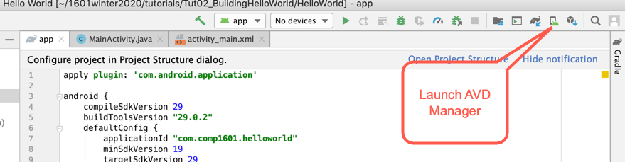
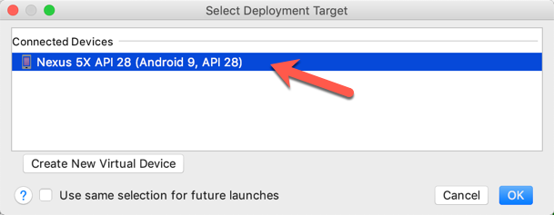

COMP 1601 Winter 2020
Tut02 -Hello World Project from Scratch and Basic Java
© L.D. Nel 2020
Revisions:
Description
Part 1: The purpose of this exercise is to build the hello world project from scratch that we used to test our Android Studio installation in the previous exercise. This will be the launching point to start to investigate the parts that make up an android application.
Part 2: As a second part we want you to run a simple java program outside the android environment. This will allow us to do simple java experiments when learning the java programming language and object-oriented programming .
You need to demonstrate your exercise to the TA or Prof. before you leave the class to get credit for it. If you complete, or make significant progress on the exercise you will get a mark of 2. If you make some progress you will get a mark of 1 and can "upgrade" that mark to a 2 by showing your completed work within one week of this exercise. 0 marks for a no-show or unsufficient progress.
Part I: Background
[Note: in the screen captures that follow I've included some things that went wrong last year. They might not be relevent this year but I'm trying to show some things that typically go wrong. In writing this tutorial I did not have such errors this year but your experience might be different -let us know.]
In the previous class exercise you opened a pre-made Android "hello world" app to see that the Android Studio was installed properly and to run the app on an AVD simulator. Moreover that was an older Hello World project migrated to the current API level. Now we want to actually build the "hello world" app from scratch using Android Studio.
The class exercise will introduce a lot of new concepts and terms. Don't expect to understand them completely now but start researching them. They will become more clear as the course unfolds.
Demo Code
This exercise has no demo code as we are building things from scratch.
(Note the screen captures in this exercise are what I experienced putting the tutorial together. Yours may vary. Please help us by pointing out significant variations that you encounter.)
Step 1)
The first thing we need to do is create an Android Studio Project from scratch. An Android Studio Project manages the files the make up an Application.
Launch Android Studio and at the welcome screen (If you already have a project open close it to show the welcome screen or alternatively choose File->New->New Project...).

Choose Start a new Android Studio project which will launch some dialogs used to obtain in formation about your new project.
Choose Phone and Tablet and Empty Activity for the kind of project to build.
Provide an Application Name, the name your app will be known by e.g. Hello World. It is also the name your app will have if it is sold on the Google Play store.
Provide a Package name which should be a unique identifier for your app within the Android app echo system. It is typical to use the company domain in reverse followed by a name particular to the app. For example: com.comp1601.helloworld. All Java code will be in "packages" (essentially folders).
Choose a location to store your project (location paths must not have blanks in them).
Choose Java as the application language (default might be set to Kotlin).
Choose API 19 as the minimum supported application level. This means only android devices running at least Android API level 19 will be able to run your app
Make sure thatthat This project will support Instant Apps is NOT checked.
Note the Help me choose link will open a dialog showing the "consequences" of the miminuim API level you choose. Click on one of those levels to see the features that became available at that level. Also notice the indication of what percentage of existing devices would be able to run your app. API level 15 gives about 100% coverage, API level 24 about 37%. (These numbers are ever changing.)
Click Finish to create the project. Android Studio will "whir and grind" a bit and generate the project:
Sometimes (as shown here for a previous year) you might get prompted to install some missing components and you might have to do the "Try Again" re-synch.
Step 2)
When you installed Android Studio it would have installed the latest SDK (likely 29). (Sometimes the new project dialog may not have created a project with the same (latest) API level. Lets look at what SDK is installed by using Android Studio's SDK Manager
SDK Manager:
We can see from this that only SDK level 29 is installed (the latest version when I installed my Android Studio at the time of this writing.) If our generated project requires a different SDK level, say 26, there are two options: install SDK level 26 as well or reset the level demanded by the project. Do the latter if necessary.
Once Android studio has finished creating the procject (stopped "whirring and grinding") Locate in the build.gradle (Module: app) file in the Android project structure pane. Double click that and it will reveal some details about the build specification. In particular that it's set to compile and target SDK level 29: (There are several build.gradle files, choose the one associated with the Module: app; it should look similar to what is shown below.)
If levels were not right you would likely get a sync failed message. Change the level, if necessary, to your installed SDK level (29 in this case) and click "Try Again" to try and resynch the project with the Gradle Build Process (how android studio tries to compile. -shown below for a level 27 project from last year.)
Again there will be some "whirring and grinding" and with some success. This time however you might notice a red underline in another field:
Apparently a support library is still at level 26.
Hover over the underlined item and you should see:
Next actually click on the underlined link. You should see a little "red balloon" and when you click on that you will see a dropdown menu with some suggestions on solving the problem. We want the Replace with 27.0.2 option. Click on that. Android studio will use this mechanism to make suggestions about replacing out of date components.
After such corrections you will likely see an indicator that Gradle needs to be synched. Go ahead and Sync Now:
Rebuild the project by choosing Build/Rebuild Project from the menubar.
Step 3)
To test what we have so far launch an AVD (built in the previous class exercise). To do so click the AVD Manager icon and launch the AVD Manager.

Select the AVD you previously built (if it's no longer there review the previous tutorial exercise and rebuild one.) Launch the AVD by clicking the green run arrow:
This will (eventually) launch your AVD:
Run the app created so far by clicking the "run app" green arrow in Android Studio:
Choose the available, running, AVD and click OK

Again there should be some "whirring and grinding" and eventually the Hello World app should launch on our AVD virtual device: (If you click the middle home button and scroll the AVD screen up you should see the app installed as well.)
Congratulations you have built your first project from scratch and run it on an AVD. In the upcoming exercises we will examine the code and start adding functionallity to the simple hello world app and learn about Android programming with Java.
Part II -A Simple Java Program
In this second part of the tutorial we want to run a simple java program outside of the android programming environment. This will allow us to do simple java experiments without the problems of being an android application. This will be useful for learning basic java concepts especially the concepts of object-oriented programming.
For this exercise you need to have the java JDK 1.8 installed on your machine. If necessary review the installation instructions in the course notes.
Create an empty folder somewhere on your machine and open a terminal window at that location. Verify the versions of java and javac by executing java -version and javac -version:
Create two files myMain.java and Song.java by executing touch myMain.java and touch Song.java (touch is a linux terminal command that changes the timestamp of a file and creates the file if it does not exist). List the files in the directory (folder) by executing ls.
Open myMain.java with your favourite text editor (TextEdit on the Mac is fine) and type the following code. (You should actually type it rather than cut and paste as you will learn more about java that way.)
class myMain {
public static void main(String[] args){
System.out.println("Hello World");
Song song = new Song("Girl From Ipanema", "***");
System.out.println("Song: " + song.getTitle() + " rating: " + song.getRating());
song.setRating("*****");
System.out.println("Song: " + song.getTitle() + " rating: " + song.getRating());
}
}
Add the following code to Song.java:
public class Song{
//represents a song
private String title; //title of the song
private String rating; //"*" ... "*****"
//constructor
public Song(String aSongTitle, String aRating){
title = aSongTitle;
rating = aRating;
}
//get and set methods
public String getTitle(){return title;}
public String getRating(){return rating;}
public void setRating(String aRating){
rating = aRating;
}
}
To compile the code execute javac myMain.java. You might get errors which you should try to debug and fix. Keep fixing and compiling until you have a "clean compile". At this stage two more files will have been created: myMain.class and Song.class. These are the compiled versions of the .java source code you wrote.
To run the program execute java myMain
So now you can write and run simple java programs. Examine the code in this example and see how much of it you understand. Be prepared to ask questions about the parts that you don't. (We are expecting that you are still learning java and that this might be totally new to you.)
Finally modify the code to add a composer property to the songs and also add a couple more songs to the example.
When you have completed these problems demonstrate your code to the TA or Prof. to get credit for the tutorial.Â